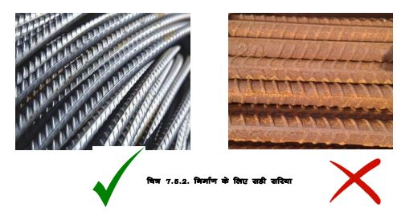
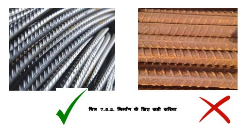
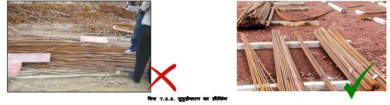
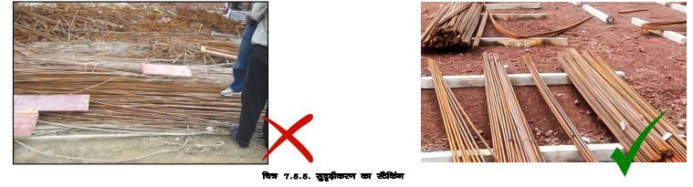

सरिया
 

हमेशा निर्दिष्ट व्यास वाले और प्रतिष्ठित निर्माता के सरिया खरीदें।
पुष्टि करें कि सरिये पर ठप् गुणवत्ता चिह्न लगा हो।
सुनिश्चित करें कि सरिया दिए गए आकार के अनुसार काटे, मोड़े और बंधे हों, और 20 गेज ड सरिया बाइंडिंग वायर का उपयोग करके मजबूती से बंधे हों।
कंक्रीटिंग और कंपन करते समय जाँच करें कि सरिया अपनी स्थिति में रहें।
सरिया जंग रहित होने चाहिए और न् आकार में मोड़ने पर टूटने नहीं चाहिए।
हल्के पीले रंग के सरिये जिन्हें साफ किया जा सकता है, उनका उपयोग किया जा सकता है, लेकिन जंग और पपड़ी वाले लाल रंग का उपयोग नहीं किया जाना चाहिए।
सरियो को इस तरह से स्टोर करें कि सरिया नमी, मिट्टी, तैलीय/चिकना पदार्थों के संपर्क में न आएं।
बीम/कॉलम और छत के स्लैब के लिए पिंजरे बनाते समय जाँच करें कि उपयोग किए गए सरिये का व्यास और प्लेसमेंट दिए गए विवरण/ड्राइंग के अनुसार है।

 
